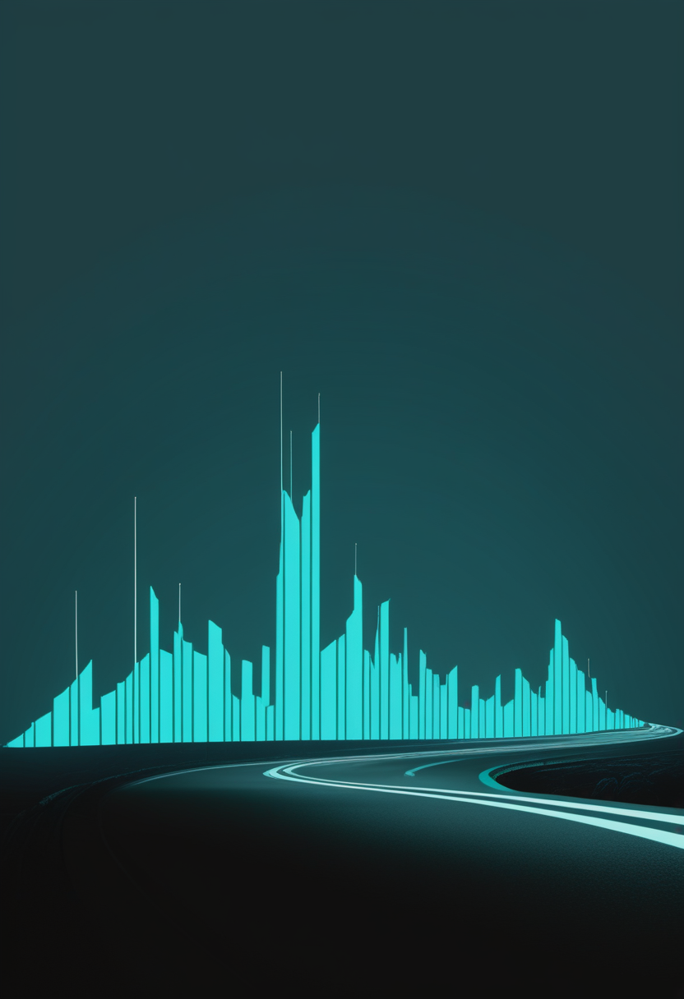
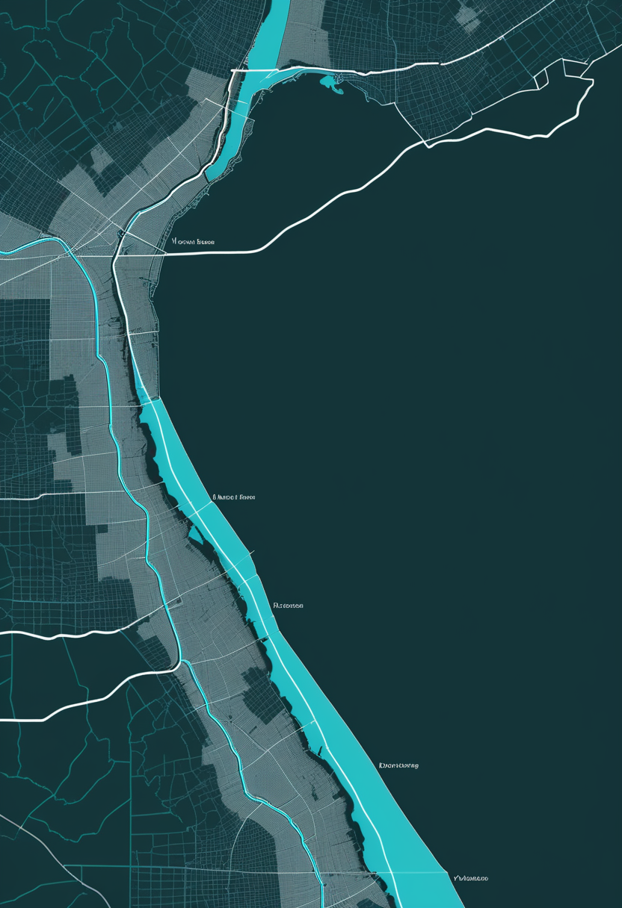
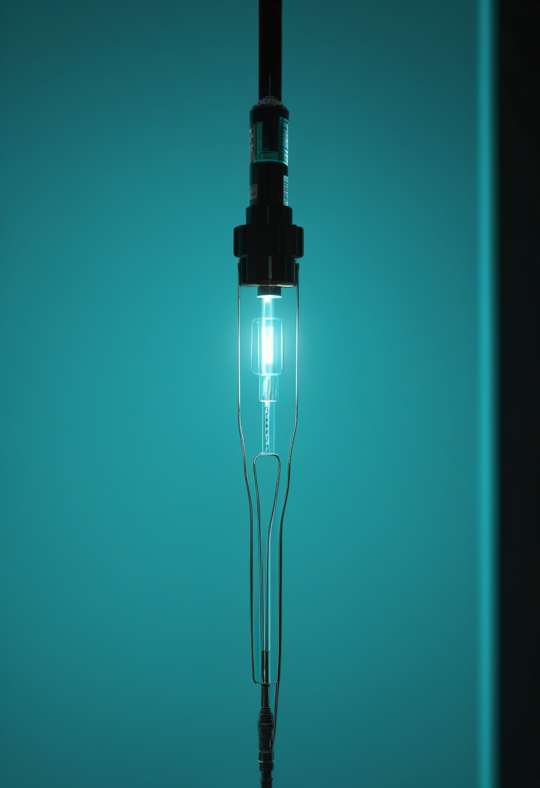
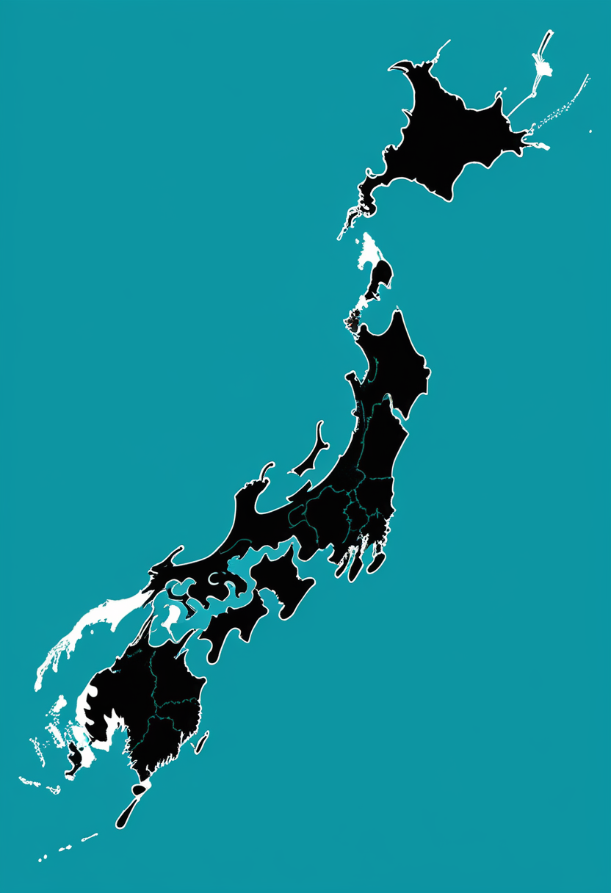
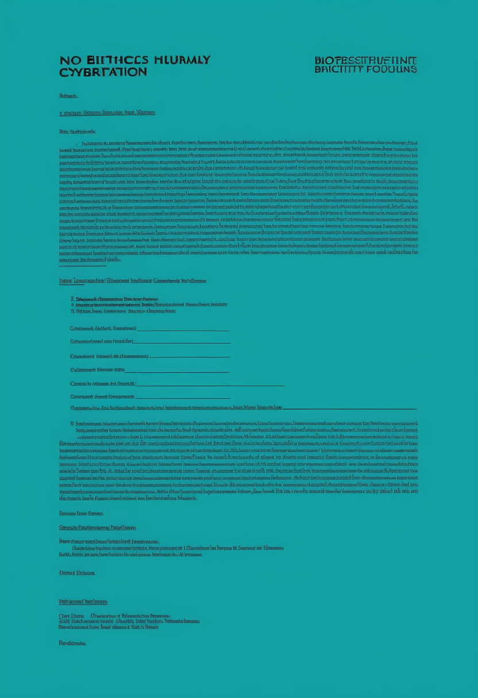

木曜日の便り。DRCのブンディブギョ型エボラは、WHOのテドロス事務局長が9月16日の記者会見で『励みになる兆し』があるとしつつ『まだ終わりにはほど遠い』と述べた。震源地イトゥリ州と南キブ州では伝播が減る一方、北キブ州は週あたりの新規例が直近2週間で倍増している。命の章では、日本でゾルゲンスマ髄注が2歳以上のSMA患者に承認されたこと、そして日本の新生児スクリーニングがまだ全国一律の移行期にあることを伝える。自由の章では、臨床試験が終わったあと植込み型BCIの扱いが宙に浮く問題、Synchronが狙う初のPMA、中国が承認済みBCI製品を5件持つに至った順序の逆転を報じる。基盤の章では、北キブの新規例倍増に加え、ペンシルベニア州の4人目の麻疹関連死とCDCが計上する死者ゼロという二つの台帳、南キブでエボラが止まった隣でコレラが広がっている実態を伝える。畏敬の章では、酸化剤漏れでCrew-13が待機する一方でプログレス96が飛んだISSの9月、量子計算が三方向から実装へ寄った1日、そして嫦娥七号が2026年の打ち上げ窓を逃し2027年へ持ち越された経緯を紹介する。美の章では、『認知主権』という語が複数の文献系統で一斉に増えていること、チリの憲法改正を安全保障の枠組みで読み直す試み、神経データを攻撃対象として扱う統治の設計という三つの動きを取り上げる。

WHOのテドロス事務局長は9月16日のオンライン記者会見で、DRCのブンディブギョ型エボラについて『励みになる兆し』があると述べ、同時に封じ込めは『まだ終わりにはほど遠い』と付け加えた。震源地イトゥリ州では最も深刻な地域で伝播が減っている。南キブ州は5月以降、新規例がない。その一方で北キブ州は、週あたりの新規例が直近2週間で約100例から200例超へ倍になった。前日9月15日に国連側が示した説明(9月12日までのデータ)では、確定は7,200例、死亡は3,500人近く、流行域は62保健区。北キブでは新たに2保健区へ広がり、州都ゴマを押さえるM23と政府軍の戦闘が対応を妨げている。WHOが9月14日に出した疾病流行情報(9月13日まで)の7,258例・3,510人と並べると、全体の曲線が緩んでも州ごとの向きは逆を向いていることになる。流行を一つの数で語れる段階ではない。なお流行州の数はWHOが6州、報道の一部は7州としており一致しない(要確認)。

米国で筋肉を標的とする薬が承認された同じ年、日本では投与経路のほうが変わっていた。ノバルティス ファーマは2026年4月3日、2歳以上の脊髄性筋萎縮症(ただし抗AAV9抗体が陰性の患者に限る)を対象とする『ゾルゲンスマ髄注』の製造販売承認を取得した。2歳以上を対象とする国内初の遺伝子治療用製品にあたる。AAV9をベクターとしてSMN遺伝子を運ぶ仕組みは点滴静注と同じだが、投与が髄腔内になることで、体重が増えた患者にも一回投与の遺伝子治療が届く道が開けた。点滴静注は体重に比例してベクター量が増えるため、年齢が上がるほど使いにくくなる制約があった。日本SMA家族の会は同剤の薬価収載を告知している(収載の時期は本号では未確認、要確認)。

前号で本紙は、米国が全50州でSMAの新生児スクリーニングを実施していることと、イングランドが10月に始まることを並べた。日本はその中間にある。日本のSMA新生児スクリーニングは都道府県単位の取り組みとして始まり、2024年から国の事業として実施するという基本方針が示された。関連する手引きと文書は2025年12月と2026年1月に改訂され、発症前の患者を登録するjREACT-SMAレジストリが稼働しているとされる(国の事業化の進捗と実施率は本号では確認できず、要確認)。診断がついてから治療に至るまでの道は、ゾルゲンスマ髄注の承認で2歳以上にも延びた。だが発症前に見つける仕組みのほうは、まだ全国一律にはなっていない。
今日のSMA欄は2本、地理という軸で並ぶ。日本はゾルゲンスマ髄注という新しい投与経路を2歳以上に開いたが、発症前に見つける新生児スクリーニングの仕組みはまだ全国一律ではない。米国が薬(ISEMBYLD)と診断網(新生児スクリーニング)の両輪をほぼ完成させているのに対し、日本は薬の到達点が先に進み、見つける仕組みが追いついていない。同じ疾患でも、国ごとに前進している場所が違う。
植込み型の神経装置が増えるにつれ、試験の終わりが問題になってきた。9月3日にThe Conversationへ出たモナシュ大学生命倫理センターのNathan Higgins氏らの論考は、この点を正面から扱う。試験は数年に及ぶため、参加者は終了時点で自分が何を必要とするかを事前には見通せない。試験後も使い続けられるのか、臨床のフォローは続くのか、抜去(エクスプラント)は選べるのか、手術や保守の費用は公的医療保険か民間保険のどちらが持つのか。これらは試験計画ごとにばらつき、装置が規制当局の承認や償還の対象になるまでには何年もかかる。オランダの研究倫理委員会の審議を調べた実証研究(Springer, Neuroethics)は、抜去が参加者に与える心理的影響が審査でほとんど論じられていないと報告した。入口の審査は厚く、出口の審査は薄い。
出口の話は、規制の到達点の話でもある。Synchronは2026年に極めて重要な(pivotal)試験を計画している。これを通れば、植込み型BCIとして初めて市販前承認(PMA)を申請する企業になる。資金は2025年11月6日に公表した2億ドルのシリーズDで、試験の実施と第1世代機の商用化準備に充てるとされる。同社の方式は血管内に留置するステントロードで、開頭を伴わないぶん解像度を安全性と拡張性に交換している。米国のCOMMAND試験については、6人が12か月にわたる主要安全性評価項目(装置に関連する死亡や恒久的な障害の増加がないこと)を満たしたと2024年9月30日に公表された。植込み患者を『12人』とする数字も流通しているが、これは豪州の先行試験との合算など数え方が異なる可能性がある(要確認)。
承認という到達点に、別の経路で先に着いた国がある。arXivに出た査読前論文(2607.07185、2026年7月10日)は、中国のBCI臨床応用を三つの柱から数え上げた。中国臨床試験登録(ChiCTR)の登録試験134件、研究者主導試験26件、そして2026年6月時点で国家薬品監督管理局(NMPA)の承認を得たBCI関連製品5件である。登録研究の79.1%は非侵襲で、適応として最も多いのは脳卒中のリハビリ(65.0%)。決定的なのは2026年3月で、清華大学の洪波教授らが開発した手の運動を補うNEOが、侵襲型BCIとして世界で初めて臨床使用の承認を得た。硬膜を破らず硬膜外に置く低侵襲方式で、電力とデータを無線で伝える。米国勢がまだ治験の段階にあるのに対し、中国では承認済みの製品が先に存在する。査読前論文である点は留意が必要である。
3本は『終わり』『関門』『順序』で並ぶ。試験の出口には制度がなく、米国の関門はPMAであり、中国はその関門をすでに一つ通している。前号で本紙は『到達点の種類と、それを誰が宣言したか』を数えよと書いた。今号が足すのは三つ目の軸、すなわち到達したあと参加者に何が残るかである。なお視線計測については、本号では直近1〜2週の新規一次情報を取得できなかった(最新取得できず)。
WHOのテドロス・アダノム・ゲブレイエスス事務局長は9月16日のオンライン記者会見で、DRCのエボラ対応に『励みになる兆し』があるとしたうえで、東部での封じ込めは『まだ終わりにはほど遠い』と述べた。内訳は一様ではない。震源地イトゥリ州では最も深刻な地域で伝播が減り、南キブ州は5月以降に新規例が出ていない。その一方で北キブ州は、週あたりの新規例が直近2週間で約100例から200例超へ倍増した。前日の国連側の説明によれば、9月12日までのデータで確定7,200例・死亡3,500人近く・62保健区、北キブでは新たに2保健区へ広がっている。同州ではゴマを押さえるM23と政府軍の戦闘が対応を妨げる。国連のエボラ特別調整官Julien Harneis氏は『資源がなければ流行は戻ってくる』と資金を求めた。WHOが9月14日に出した疾病流行情報(9月13日まで)の7,258例・3,510人・6州61保健区と、報道の一部が挙げる7州は一致しない(要確認)。
同じ『二つの台帳』が米国でも起きている。ペンシルベニア州は9月15日、4人目の麻疹関連死を報告した。亡くなったのは未接種のミフリン郡の10代で、死因は感染後に起こりうる急性散在性脳脊髄炎(ADEM)である。同州の累計は67郡のうち38郡で693例に達し、同州で麻疹による死亡が出たのは35年ぶり。米国全体で年に4人の麻疹死が数えられるのは1992年以来になる。ところがCDCは、2026年の麻疹死を1件も計上していない。麻疹が死因かどうかを判断する情報が足りないという立場で、国立保健統計センターには麻疹を原因とする2026年の死亡記録がないとされる。米国全体は9月10日時点で確定3,294例、38件の集団発生に約95%が関連し、95%が未接種または接種歴不明、8%が入院した。2000年の排除宣言以降で最多である。
エボラの新規例が5月以降ない南キブ州は、別の病気では静かではない。Africa CDCの集計によれば、DRCのコレラは2026年1月1日から8月16日までに33,182例・943人の死亡。南キブ州だけで年初来11,100例を超え、195人が死亡している。州保健当局は第33週(8月中旬)の1週間で疑い449例・13人の死亡を報告した。ユニセフは、この流行をDRCにとって25年で最悪のコレラ危機と位置づけ、背景に紛争による避難、衛生設備の不足、清潔な水の欠乏を挙げる。エボラの派手な致死率の陰で、同じ州の同じ人々に別の水系感染症が積み上がっている。
今日の3本は、合計と内訳の関係で並ぶ。DRCのエボラは全体の曲線が緩む一方で北キブだけ倍になり、『減っている』と『増えている』が同じ流行のなかで同時に正しい。ペンシルベニアの麻疹は、州が4人と数えCDCが0人と数える。どちらも嘘をついていないが、死因の確定という手続きの位置が違う。南キブはエボラが5月から止まっているのに、コレラでは年初来1万1千例を超える。前号までは分母と時点を揃えよと書いてきたが、本号で分かるのは、揃えたあとに残る差こそが読むべき情報だということである。
国際宇宙ステーションへの往復は、漏れ一つで止まっている。SpaceXのCrew-13は9月12日の打ち上げ予定だったが、ドラゴンのドレイコ推進系で酸化剤の四酸化二窒素(NTO)の漏れが打ち上げ前の整備中に見つかり、ケープカナベラルで待機に入った。打ち上げは9月30日以降へ延期された。NASA長官のJared Isaacman氏は修理に2〜4週間かかりうるとし、NASAとSpaceXの合同チームが追加試験とデータの確認を続けている。搭乗予定にはカナダ宇宙庁のJoshua Kutryk氏が含まれる。一方、無人の補給船は動いた。プログレス96(プログレスMS-35)は9月16日午前9時33分(米東部時間)にバイコヌール宇宙基地からソユーズで打ち上げられ、食料、軌道維持用の推進剤、飲料水、大気用のガス、予備品など約2,600kgを運んだ。人を運ぶ側だけが慎重になる、というのが有人宇宙飛行の設計思想である。
量子計算の9月15日には、性質の違う三つの動きが並んだ。富士通は量子アプリケーション開発基盤OpenQARPをApache License 2.0でGitHubへ公開した。100を超える部品を組み合わせてNISQと誤り耐性量子計算(FTQC)の双方の作業手順を簡素化する設計で、コード量は最大70%削減されるという。Python、NVIDIA CUDA-Q、同社の40量子ビットのシミュレーターで実行できる。ParityQCは、最適化問題をハードウェアの構造へ直接写すことで古典的なSWAPゲートの上乗せを省き、回路の深さを減らすコンパイラParity Twine Optimizerを、IBMのQiskit Functions Catalogを通じて公開した。東陽テクニカはIQM Spark(5量子ビット)を追加で導入し、先行して発注済みの20量子ビットのIQM Radianceと合わせ、2027年初めに日本国内で2台構成の試験環境を稼働させる。大学、スタートアップ、企業の研究者に開かれた場になるという。ソフトウェア、コンパイラ、設置場所。量子ビットの数を競う段階の外側で、使うための足場が組まれている。
前号で本紙は、嫦娥七号が8月19日に長征5号Y14とともに文昌へ搬入されたところまでを伝え、その後の打ち上げ状況を『要確認』とした。答えが出た。中国側は8月23日、月南極のシャクルトン・クレーター付近で水氷を探すこの探査機について、今年の打ち上げ予定期間内には実施できないと発表した(発表主体は報道により『中国有人宇宙計画局』『中国載人航天工程弁公室』などの表記があり、本号では確定できず要確認)。当初の打ち上げは8月23〜24日ごろに見込まれていたが、文昌付近への熱帯暴風雨の接近が背景とみられ、当局は『絶対的なミッション成功』の原則に基づく判断だと説明した。次の打ち上げ機会は2027年が見込まれるが、具体的な日程は本号時点で未発表(要確認)。嫦娥七号はオービター・着陸機・ローバー・小型飛翔探査機の4要素で構成され、国際ペイロード6個を含む計21個の科学機器を搭載し、将来の月面研究基地候補地の評価も兼ねる。有人便を慎重に止める米国の9月と、無人探査機を丸ごと1年先送りする中国の9月が、同じ『絶対に成功させる』という発想を別の場所で実行している。
3本は『待つ』の中身が違う。Crew-13は酸化剤漏れの修理という安全のための待機、量子はソフトウェア・コンパイラ・設置場所という使うための足場づくり、嫦娥七号は悪天候とみられる要因で2026年の窓そのものを1年先送りした待機である。有人か無人か、地球周回か月面かを問わず、9月は『慎重に止める』ことが共通の意思決定になった。
2025年から2026年にかけて、『認知主権(cognitive sovereignty)』という語が互いに無関係な複数の文献系統で同時に増えている。SSRNに出たJimmy Chow氏の論考は、この語が個人の認識論、先住民共同体の研究、ニューロライツ、データ植民地主義への批判のそれぞれで別々に使われてきたと整理したうえで、これまで政治共同体そのものの規模では理論化されてこなかったと指摘する。そこで提案されるのが『集合的認知インフラ』という概念で、共同体の構成員が情報を受け取り、証拠を評価し、判断を形成し、集合的な決定を審議するための技術的・制度的な仕組みの総体を指す。個人の頭の中の自由という枠から、社会が考えるための設備という枠へ、議論の単位が移りつつある。

具体的な立法例を、別の分野の枠組みへ引き上げる作業も進む。Frontiers in Public Healthに2026年に載った論文は、チリが2021年に行った憲法のニューロライツ改正を、非伝統的安全保障の分析枠組みとして予備的に概念化した。従来この改正は主に生命倫理・人権の文脈で語られてきたが、この論文は認知主権を守る条文を、安全保障政策の分析対象として読み直す。ニューロライツが最初に憲法へ入った国の経験を、権利の言葉から統治・安全保障の言葉へ移す試みにあたる。なお同じ号の系統には、グローバル・サウスにおける認知主権とニューロ・ジャスティスを論じたSaracini氏の論文(2026年5月20日)もあるが、こちらは前号(9/12号)で既報のため本号では割愛する。
権利の宣言の次には、実装が要る。Neuroinformatics(Springer)に2026年に載った論文は、神経データへの脅威、自律的なサイバー防御、本人性を考慮した安全確保を一つに束ねるAI対応の統治枠組みを示した。前提となる現状認識は厳しい。GDPR、HIPAA、ブダペスト条約、2025年のユネスコ神経技術倫理勧告、そして少数の州法という組み合わせは、断片的で不完全だと評価されている。心をモデル化する側からの検討もあり、arXivの査読前論文(2606.23094)は認知デジタルツインの倫理リスクと統治を扱う。本紙が前号までに扱ってきた『5A』(権限・自律・アクセスと制御・説明責任・可用性)の枠組みは、こうした防御の設計と同じ問題を別の入口から見ていることになる。
前号の本欄は『写す』『当てる』『使う』で並んだ。今号は『名づける』『移す』『守る』になる。共通するのは、議論の単位が個人から共同体へ動いていることである。マインドアップロードの問いが個人の意識の連続性を扱うのに対し、認知主権の議論は、社会が判断を形成するための設備を誰が握るのかを扱う。前者は答えが出ていないが、後者はすでに立法と製品と攻撃対象がある。急いで決めなければならないのは、たぶん後者のほうである。
木曜日の便り。DRCのブンディブギョ型エボラは、WHOのテドロス事務局長が9月16日の記者会見で『励みになる兆し』があるとしつつ『まだ終わりにはほど遠い』と述べた。震源地イトゥリ州と南キブ州では伝播が減る一方、北キブ州は週あたりの新規例が直近2週間で倍増していた。命の章では、日本でゾルゲンスマ髄注が2歳以上のSMA患者に承認されたこと、そして日本の新生児スクリーニングがまだ全国一律の移行期にあることを伝えた。自由の章では、臨床試験が終わったあと植込み型BCIの扱いが宙に浮く問題、Synchronが狙う初のPMA、中国が承認済みBCI製品を5件持つに至った順序の逆転を報じた。基盤の章では、北キブの新規例倍増に加え、ペンシルベニア州の4人目の麻疹関連死とCDCが計上する死者ゼロという二つの台帳、南キブでエボラが止まった隣でコレラが広がっている実態を伝えた。畏敬の章では、酸化剤漏れでCrew-13が待機する一方でプログレス96が飛んだISSの9月、量子計算が三方向から実装へ寄った1日、そして嫦娥七号が2026年の打ち上げ窓を逃し2027年へ持ち越された経緯を紹介した。美の章では、『認知主権』という語が複数の文献系統で一斉に増えていること、チリの憲法改正を安全保障の枠組みで読み直す試み、神経データを攻撃対象として扱う統治の設計という三つの動きを取り上げた。
では、また明日の朝に。 — JaH